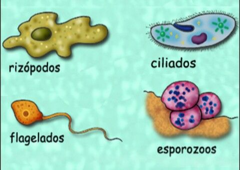

Los protozoos (Figura ![[*]](crossref.png) ). Los protozoos son seres unicelulares y heterótrofos. Viven en medios acuáticos, en tierras húmedas o en el interior de otros seres vivos.
). Los protozoos son seres unicelulares y heterótrofos. Viven en medios acuáticos, en tierras húmedas o en el interior de otros seres vivos.
Tipos de protozoos. Los protozoos pueden clasificarse según las estructuras que utilizan para desplazarse:
- Los hay que emiten unas prolongaciones que salen de su citoplasma llamadas pseudópodos.
- Otros tienen un único filamento, llamado flagelo, que mueven a modo de látigo.
- Algunos tienen en su superficie pequeños filamentos móviles llamados cilios.
- También los hay inmóviles, que carecen de estructuras para desplazarse.
Figura:
Tipos de protozoos
|

|
Funciones vitales de los protozoos.
- Nutrición. Los protozoos tienen nutrición heterótrofa; algunos se alimentan de residuos que encuentran en el medio; otros son cazadores de microorganismos, de los que se alimentan.
- Relación. Muchos son capaces de moverse para capturar el alimento o para acercarse o alejarse de la luz; otros reaccionan expulsando sustancias.
- Reproducción. Por lo general, los protozoos se reproducen de forma asexual.
Los protozoos y el ser humano. Algunos protozoos son perjudiciales, y nos causan enfermedades como la malaria; otros son beneficiosos, como los que forman parte del plancton del que se alimentan muchos seres acuáticos, de los que, a su vez, nos alimentamos las personas.
Las algas. Las algas pueden ser unicelulares o pluricelulares y no tienen tejidos. Su nutrición es siempre autótrofa. La gran mayoría de las algas son acuáticas, pero algunas pueden vivir en la corteza de los árboles y sobre las rocas.
Tipos de algas. Hay algas unicelulares, como las euglenas, que se desplazan en el agua. Las algas pluricelulares, además de clorofila, pueden tener otros pigmentos que les dan un color característico.
Así, según sea el pigmento mayoritario, se clasificanen (Figura ):
- Algas verdes, que tienen, sobre todo, clorofila.
- Algas rojas, que contienen pigmentos de color rojo.
- Algas pardas, con pigmentos anaranjados.
Funciones vitales de las algas
- Nutrición. Todas las algas son autótrofas y sintetizan su propia materia orgánica mediante la fotosíntesis.
- Relación. Las algas unicelulares tienen flagelos con los que nadan hacia la luz. Las pluricelulares tienen estructuras para fijarse a las rocas y resistir el oleaje o para flotar en la superficie del agua.
- Reproducción. Las algas se pueden reproducir de forma asexual y sexual.
Las algas y el ser humano
- Las algas beneficiosas. Gracias a la fotosíntesis, las algas oxigenan el océano y la atmósfera, reduciendo los niveles de dióxido de carbono. Podemos utilizarlas como alimento o como ingredientes para fabricar batidos o helados. Con otras elaboramos medicamentos, abonos y productos químicos variados.
- Las algas perjudiciales. Algunas algas tóxicas, cuando se reproducen en exceso, pueden causar graves problemas de contaminación en mares cerrados, lagos o pantanos.